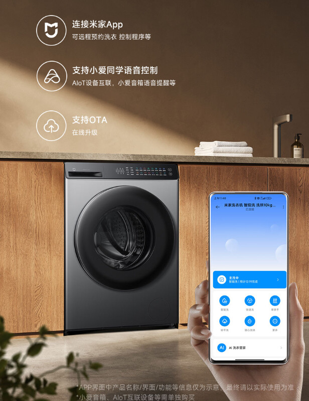
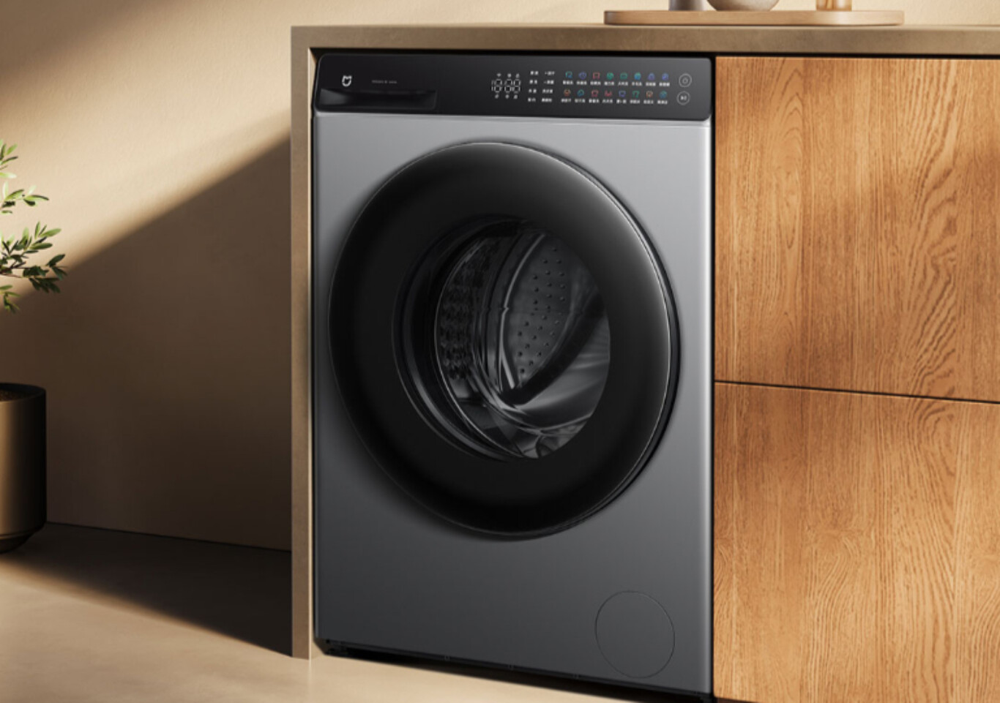

Noticia: contenido principal
Con un diseño elegante y súper clásico en un color que suele romper con la tradición del blanco nuclear que todas tienen, la Xiaomi MIJIA Essence Wash 10kg Smart Washing Machine es una lavadora de carga frontal -tiene la puerta en el lateral, no arriba, con un panrl de botones táctiles, cajón del detergente y la zona del filtro y del desagüe. En términos de interfaz y manejabilidad va directa al grano.
Equipada con un gran diámetro de tambor de 525mm, la Mijia Essence también admite la limpieza del tambor a alta temperatura de 95℃ y la pulverización de la junta de la puerta. Está equipada con un motor de accionamiento directo (DD) que hace que la lavadora sea más estable y silenciosa durante el funcionamiento.
Noticia: Más información
En términos de rapidez, más aún: La nueva lavadora MIJIA utiliza la tecnología de lavado rápido Essence y puede completar el proceso de lavado en menos de 36 minutos, gracias a la inyección directa de alta presión para garantizar un lavado eficiente. En comparación con las lavadoras tradicionales, la nueva tecnología reduce el tiempo de lavado hasta un 45%. También permite ahorrar un 33% de agua y un 40% de electricidad.
En cuanto a otra de sus funciones estrella, la de secado, la lavadora 'smart' incorpora un sensor de alta precisión para controlar con exactitud la temperatura y el tiempo en tiempo real, para detenerse eficazmente cuando la ropa está seca. También admite el secado suave a baja temperatura, con un control preciso de la temperatura entre 55°C y 65°C, lo que garantiza que la ropa no se dañe durante el secado.
Al mismo tiempo, la alta velocidad uniforme del viento de 14,5 m/s garantiza tiempos de secado significativamente más cortos, dejando la ropa lista para ser planchada directamente -otro fastidio, pero al menos esta lavadora -secadora nos ahorra el ritual del tendedero. Y por descontado, al ser de Xiaomi es una lavadora inteligente y viene con el sistema HyperOS, por lo que puedes conectarla a la app Mijia Home y programar la colada de forma remota, controlando los programas a través de la App MIJIA. También es compatible con el control de voz XiaoAi, la interconexión de dispositivos AIoT y el recordatorio de voz del altavoz XiaoAi. La lavadora incluso puede conectarse para ser actualizada online igual que tu móvil.